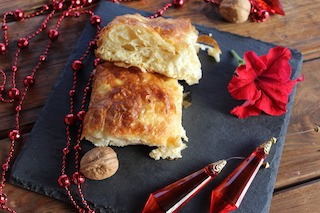

Banitsa (Bulgarian Cheese Pie)

Description
Banitsa is a phyllo dough pie stuffed with feta cheese, eggs, and yogurt.
Ingredients
- 450 g phyllo dough sheets
- 340 g feta cheese
- 4 eggs
- 3/4 cup butter
- 2 cups yogurt
- 1/2 teaspoon baking soda
Steps
- Preheat oven to 375˚F (190˚C). Grease a 12 inch (30.5 centimeter) baking pan or springform pan with butter.
- In a large bowl, beat together the eggs and yogurt until smooth.
- Crumble in the feta cheese, followed by the baking soda and whisk together.
- Unroll the thawed phyllo sheets and cover with a towel. Place one sheet on work surface and gently brush with melted butter.
- Add the cheese yogurt mixture in a thin line across the long side nearest you or gently brush across the buttered sheet.
- Tightly roll up the phyllo sheet to the other long side. Place seam side down around the edge of the buttered baking dish.
- Repeat with the remaining phyllo sheets, continuing to wrap them around the pan towards the center in a coiled pattern.
- Brush the top of the Banitsa with butter.
- Bake in the preheated oven until the top is golden brown, about 45 minutes to 1 hour.